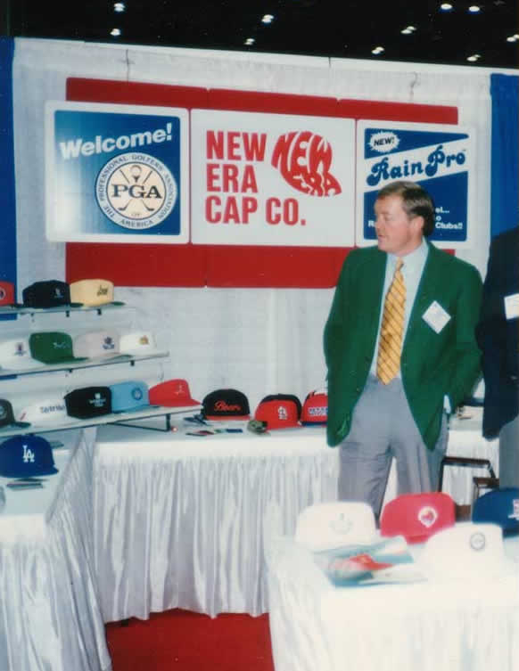
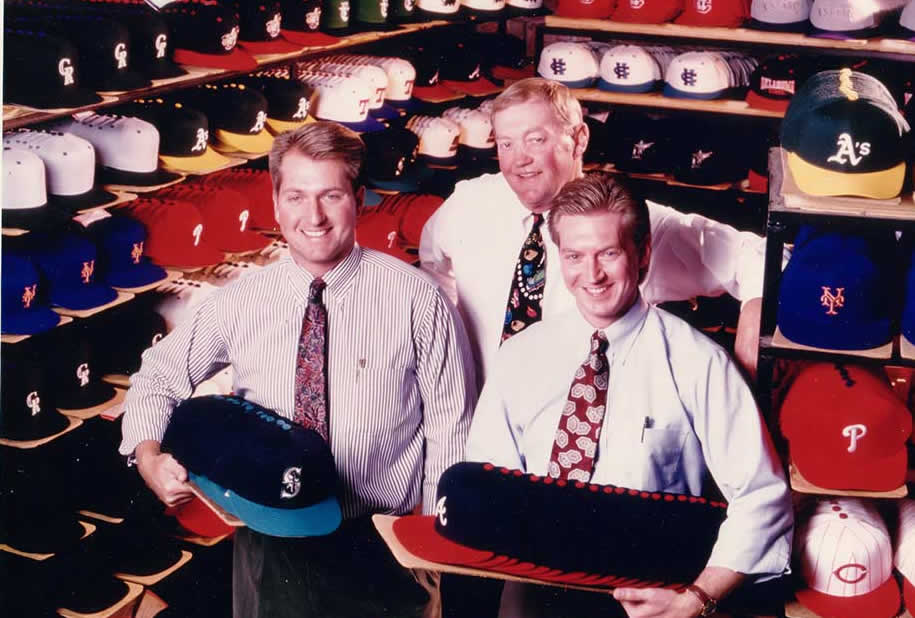

Los 80 - ARRIBA Y ADELANTE
Guiados por la visión de David Koch, los 80 fueron una década de constante crecimiento. La empresa estaba produciendo gorras para deportes colegiales, beisbol de Triple A y beisbol fuera de Estados Unidos. Empezó a vender gorras a los fans más allá del beisbol.
Los 90 - LA COMBINACIÓN 1-2
Nombrada la proveedora exclusiva de gorras en el campo de juego para las Ligas Mayores en 1993, y experimentando su primer asomo de gorras personalizadas en el mundo de la moda, con Spike Lee como aliado, en 1996, New Era le dio forma a un futuro de creatividad y colaboración.
Los 2000 - HAZTE GLOBAL O RETÍRATE
La visión que marcó el crecimiento de los 20 y los 30 probó que estaba viva y funcionando en la primera parte de milenio. Los esfuerzos de globalización de la compañía continuaron, abriendo oficinas en Europa, Japón y Australia en un periodo de dos años.
Empezamos a colocarnos como la marca número uno de gorras en el mundo y una de las de mayor expansión en el mundo del deporte, la moda, la música y el entretenimiento.
En 2001, Chris Koch, quien era presidente desde 1993, fue nombrado CEO.
En 2006 la empresa trasladó sus oficinas centrales en Derby de vuelta al centro de Buffalo, donde todo empezó 86 años antes.
Los 2010 - TODOS AL TERRENO DE JUEGO